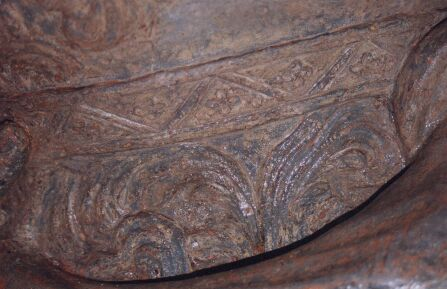

In 1998, the statue of George II was removed for restoration, having deteriorated to such an alarming degree that scaffolding props were required. The statue finally returned to the Royal Square in 1999 and was revealed to be one of the finest surviving examples of lead sculpture in the British Isles.
Propped up and supported before being removed for restoration
George II removed for restoration in 1998
Welcome back, your majesty
WHAT a splendid sight dear old George II looked on the front page of Wednesday's JEP all wrapped up in his thermal underwear like an overgrown Teletubby or a woolly Michelin Man.
Actually the Royal Square bas been a sadder and lonelier place without the old fellow, and it's good to have him back in his newly gilded splendour with all his important little places now visible after those layers of decorative treatment and gunge had been removed from his regal surface.
Unlike the one-legged tin soldier of the children's fairytale who was made of lead but had a heart of gold, dear old George is made of lead with a skin of gold. He makes a splendidly glamorous if rather ostentatious addition to the place which is the heart of our Island.
JEP 23/1/1999
George back at rest in the Royal Square
THE newly restored statue of George II was returned to its resting place in the Royal Square this morning after an overnight journey from the UK. The life-size likeness, wrapped from head to toe in cotton wool, was hoisted with a crane from its packing case and carefully lowered on to its pedestal.
Propped up and supported before being removed for restoration
Damage
The operation was watched by a small group of people including Public Services president Deputy Jerry Dorey.
Rough seas in the English Channel last night caused minor damage to gilding on the statue's right arm, but restorers Janet and Andrew Naylor said that it was not a problem and would be easily touched up.
In removing 37 layers of material, which have built up since the statue was sculpted by John Cheere in 1751, Mr and Mrs Naylor have exposed fine detail which has not been visible for 200 years.
Public Services will be erecting a viewing gallery to enable the public to see the statue at close quarters.
Looking up at the gleaming figure, Deputy Dorey said: 'They've done a cracking good job on him, and I hope he's comfortable for another 100 years.'
JEP 20/1/1999

Parking in the heart of St. Helier
AFTER careful restoration which has revealed detail unseen for the past 200 years and a lick of glittering gold paint, the statue of King George II has returned to its rightful place in the Royal Square.
We shall never know whether his majesty who, during the centuries he has spent on his plinth, has silently witnessed the horse give way to motorised transport, the Cosy Corner become the Cock and Bottle and regular markets replaced by the annual Vièr Marchi, approves of his recent facelift or of change in general. It is nevertheless tempting to imagine that Royal George hates cars almost as much as he must hate pigeons.
If this were indeed the case, the king would presumably dislike all cars equally and would heartily approve of the paving of Royal Court Road and the banishment of dignitaries' vehicles from in front of the Royal Court building. He might also be delighted to learn that the new president of the Public Services Committee, Deputy Jerry Dorey appears to share remarkably similar views.
Quite rightly, Deputy Dorey says that there should be fresh discussions with his committee before any decision can be taken to allow cars to return to the Royal Square. This stand will be supported by the many Islanders who believe that there is no compelling reason why parking even for the Bailiff, the Deputy Bailiff or the Attorney-General should be permitted in what has been described as the historic heart of St Helier.
It has taken many failed campaigns and many years for the States to sanction the paving of Royal Court Road. As a consequence, parked cars should no longer spoil the integrity of the town's focal point or dilute the impact of fine civic architecture. To jeopardise this welcome advance by making an exception for certain senior officials would be nothing less than perverse.
We can only guess what George II might advise if he were asked to solve the Royal Square parking problem. It is, however, possible that the monarch who personally led his army into battle during the War of the Spanish Succession would cast his eyes over the scene and say: 'Those unloading bays in Church Street and Halkett Place turn them into official parking spaces and have done with it.'
JEP 22/1/1999
Monarch in a toga
He's dresses like a Roman senator, he's lost his baton, there are bullet marks on his body and he's got two left feet. But at least he's back. Eight months after his exile, George II stands proud in the Royal Square
The statue of George II has returned the Island, eight months after being moved from its pedestal in the Royal Square to be shipped to Telford in Shropshire for restoration.
The newly gilded lead monument was hoisted back into place on Wednesday with very little of the pomp and ceremonial that surrounded its erection on 9 July 1751. On that occasion the civil and military authorities paraded through St Helier to the Royal Square, watched by crowds of people as cannons boomed out from Elizabeth Castle.
According to an official account of the day, the procession was made up of a squadron of horse, 30 troopers and five companies of fusiliers each consisting of 48 men, The military accompanied the Lieut.-Bailiff, Charles Lemprière, and the Lieut.-Governor, Col William Deane, who walked behind the denunciator carrying the Mace. At the moment the statue was unveiled, a signal was given from the top of the Town Church for seven cannons to be fired from Elizabeth Castle. This was followed by a volley from the fusiliers.
Everyone then toasted His Majesty's health before marching back through the town, The rest of the day was given over to entertainment, while at night bonfires were lit on the hills above town.
Monument
The States had taken 52 years to decide what kind of monument should take the place of the market cross in what was then called Market Square, first discussing the subject in 1698.
Various suggestions were made - such as a pillar surmounted by a sundial - but nothing happened until Abraham Gosset was given the contract to erect an appropriate feature. On 2 June 1750 the States approved his idea of a gilded lead statue of George II. He was given one year to complete the task - on threat of incurring a £100 penalty.
John Cheere was commissioned to craft the likeness at his workshops at London's Hyde Park Corner. He was probably chosen because his brother, Sir Henry, had already carried out a number of commissions in both Jersey and Guernsey, as well as being responsible for two memorials of Islanders in Westminster Abbey.
Somewhere in the ensuing years the origins of the statue became clouded in myth, which was perpetuated in an article in 1862 in the Gossiping Guide to Jersey, then later by Lillie Langtry in her autobiography.
According to folklore, the Jèrriais were short of statues when a Spanish ship - conveniently carrying a gilded likeness of a Roman emperor was wrecked on the Island's coast. The salvors took the figure and erected it in the name of the reigning monarch.
This tale grew from the statue's romanesque appearance, yet Cheere was simply working in the artistic style of the day to cast lifesize statues of dignitaries in the garb of a Roman senator.
Memoirs
The myth was laid to rest by Susan Legouix in the Connoisseur magazine in 1975. She described Cheere's statue as 'one of the major works of this distinguished sculptor'. Yet it has frequently come in for criticism. A suggestion was once made to remove it from its pedestal to make way for a monument to Major Peirson, who was killed in the Battle of Jersey.
In his Standard Guide to Jersey, published in 1957, Balleine dismissed the artistic merit of the statue with a derogatory remark:, 'The less said of it the better.'
Mrs Langtry's brothers were of a similar mind, as she recalled in her memoirs. In their youth her brothers had submitted the statue to the indignity of a liberal coating of tar and feathers - an incident which caused quite a stir at the time.
However, Pat Carter, of the Jersey Public Sculpture Trust, is convinced of its artistic worth. She visited Mr and Mrs Naylor's studio two months ago to see the statue stripped down to the base metal, 'It is a bizarre figure,' she said, 'but it is truly a work of art. And the detail is exquisite.'
One of the figure's more unusual features is that it has two left feet. Mrs Carter explained that this was not uncommon on statues of the period.
Whatever people think of the statue, not many may be aware of its great local and historical significance, The distances shown on milestones found all over the Island are calculated from its pedestal, and when the Viscount proclaims a new monarch he does so standing on the granite platform in front of the first public statue to be erected in Jersey.
Public Services now intend to erect a viewing gallery so that the people of Jersey can see the Island's most famous statue at close quarters.
Two left feet - being positioned for reinstallation after restoration 1999
Factfile... George II
George II was the second monarch of the house of Hanover. He lived from 1683 to 1760, ascending the throne in 1727. His consort was Caroline of Ansbach.
The king learned nothing from his loveless childhood, throughout which his parents, George I and Queen Sophia Doreathea, treated their children with indifference. He adopted a similar approach to rearing his own offspring, even trying to remove his son Frederick, Prince of Wales, from the line of succession,
George II inherited his father's passion for the arts, becoming a benefactor to the composer Handel at a crucial point in his career.
George II may not have been popular with his eldest son, but he did gain the respect of leading figures of the day. Prime minister William Pitt said of his monarch: 'He had something of humanity, and among many other royal and manly virtues, he possessed justice, truth and sincerity.' The founder of Methodism, John Wesley, spoke in a similar vein: 'When will England ever have a better prince?'
Replacing the scroll after restoration 1999
Thirty layers of paint and plaster... and some tar and feathers
THE statue of George II was in a sorry state when it left Jersey for Janet and Andrew Naylor's studio in Telford, Shropshire.
Eddie Cuthbert, engineering services manager for Public Services, said that if the statue had not been propped up in the weeks before it was removed, it could have crashed down on to the Royal Square. It had been held in place by only one of three fixings.
Mr and Mrs Naylor run a conservation and sculpture consultancy business, and their specialised skills have been employed to restore statues and monuments all over the British Isles. Mrs Naylor said that working on what is probably John Cheere's most impressive piece had been an interesting experience. 'I've never found such fine detail on a lead statue,' she said.
More than 30 layers of gilding, paint and plaster had to be removed, first by using solvents and then, painstakingly by hand, with laser technology, before repairs could be carried out on the splits and holes. As the layers came away, additional damage was uncovered.
Over the years a variety of materials have been used to effect repairs, a process which Mrs Naylor describes as quite common.
In the past, craftsmen would have made the process of gilding an easier task by first applying coats of plaster to fill in intricate details.
Mrs Taylor pointed out that this labour-saving trick probably served to preserve the statue's fine detail.
Breastplate
She gave an example of Cheere's intricate design work by explaining what happened when she was using the laser to clean the figure's breastplate. 'I knew that there was a harp with an angel on one side, but as the layers came off I could see the fine detail of the feathers. It was quite exciting,' she said.
Two dark-coloured layers proved to be something of a mystery to the restorers. Unlike deposits built up from airborne pollutants, these appeared to have been deliberately applied.
Mrs Naylor said that although there was no conclusive proof of the origins of these layers, blame could lie with the escapade described in Lillie Langtry's autobiography when her brothers slapped on a coating of tar and feathers.
As the statue had been in place during the Battle of Jersey, bullet marks on the surface could be attributed to the musketfire that ricocheted around the Royal Square.
The statue will go back up empty-handed until a newly crafted baton replaces the one that mysteriously disappeared in 1997.
As with the precise origins of the figure, there has also been some debate over what it was that he held so proudly aloft. Some sources say that in keeping with its romanesque appearance, it is a baton. Others believe that it represents the Island's constitution.
A more plausible suggestion could be that as the king was patron of the development of St Helier's harbour during his reign, he is depicted with the rolled-up plans. The statue has been part of Mr and Mrs Naylor's life for eight months. Will they miss having it around? 'No, we won't miss it,' said Mr Naylor. 'It's always nice to see them go back up.'
JEP 22/1/1999

George II after restoration 1999
Before cleaning

And after cleaning
Fine decorative detail revealed
A detail of the Scottish thistle on the king's tunic
The decoration on the arm had been almost completely hidden
Initial cleaning revealed that there was some unsuspected detail
Further cleaning gradually revealed more detail
Yet more cleaning
More cleaning
Until the fine detail, unseen for a century and more, is seen once more
Who suspected that Jersey possessed such a work of art?